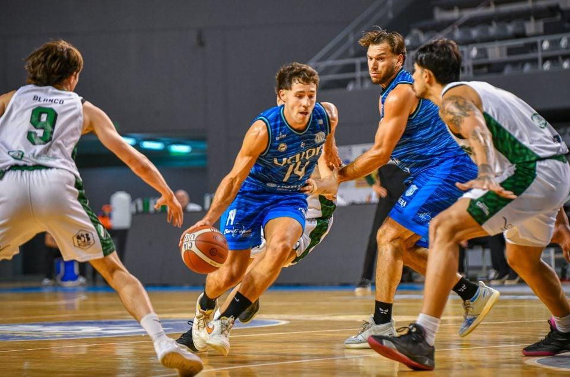
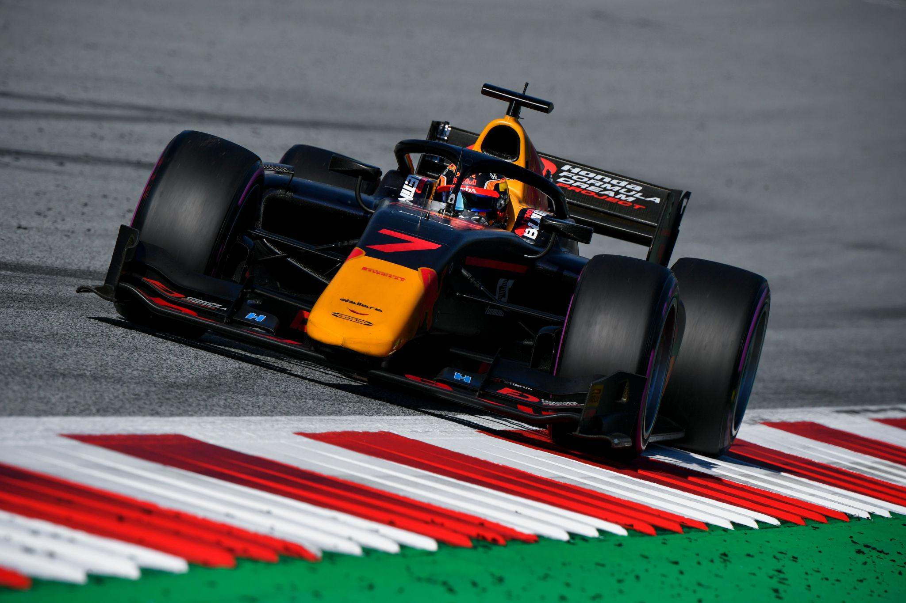

Destaque da semana

O campeonato chega a uma rodada decisiva, com equipes disputando as primeiras posições.
Confira os próximos jogosConfira as últimas notícias, acompanhe os próximos jogos e veja a classificação do campeonato.
O campeonato chega a uma rodada decisiva, com equipes disputando as primeiras posições.
Confira os próximos jogosExibindo todas as notícias.

A equipe conquistou três gols após uma partida equilibrada contra o Grêmio.
Notícia fictícia para demonstração.

Os clubes intensificam os treinamentos para os confrontos da próxima semana.
Notícia fictícia para demonstração.

As equipes chegam preparadas para um duelo marcado pela intensidade defensiva e pela disputa por cada posse de bola. O aproveitamento nos arremessos pode ser decisivo para definir o resultado.
Notícia fictícia para demonstração.

A escolha dos pneus, o momento das paradas nos boxes e o gerenciamento do desgaste serão fatores importantes. Uma decisão estratégica pode mudar a posição dos pilotos
Notícia fictícia para demonstração.
Calendário fictício para demonstração.
| Posição | Equipe | Pontos |
|---|---|---|
| 1º | Internacional | 18 |
| 2º | Grêmio | 15 |
| 3º | Fluminense | 12 |
Cadastre-se para acompanhar as novidades do Sports Central e escolher quais atualizações esportivas mais interessam a você.
Demonstração acadêmica: os dados ficam salvos somente neste navegador, não são enviados por e-mail nem para um servidor.